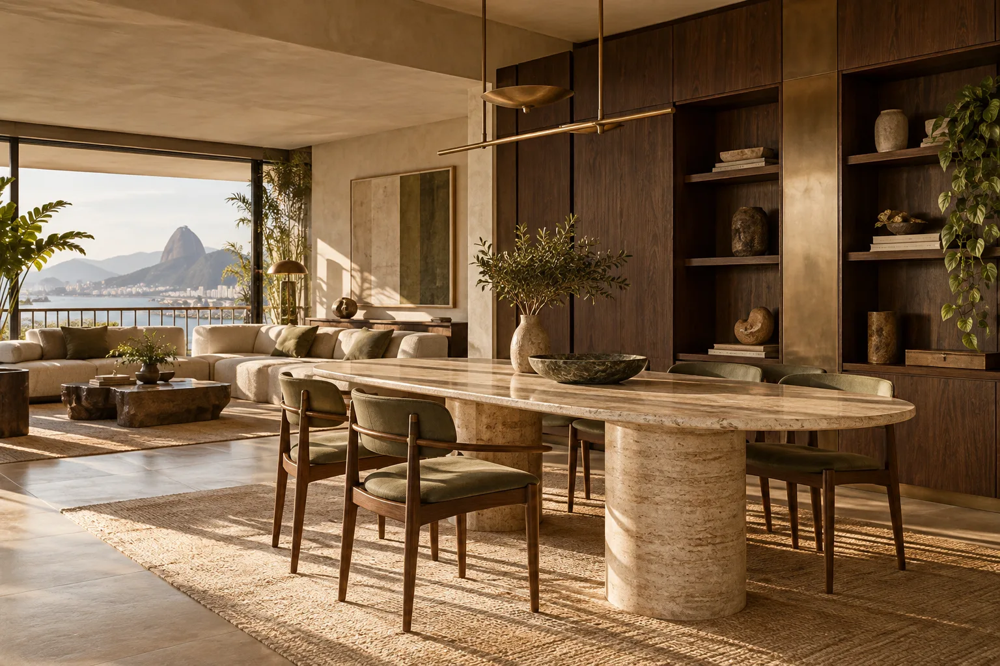

ESTUDO 01 / FOOD & HOSPITALITY
Casa Miga.
Padaria de bairro, do primeiro café ao último pão quente.
Entrar na experiência ↗DIGITAL EXPERIENCE STUDIO · BRASIL
Um laboratório de experiências para mostrar o que uma presença digital bem pensada pode fazer por negócios de verdade — da primeira impressão ao próximo pedido.
Explore os estudos ↓
01 — MAIS QUE UMA PÁGINA BONITA
Produto que gira. Menu que dá fome. Espaço que convida. Serviço que inspira confiança. A tecnologia entra para contar a história certa e facilitar o próximo passo.
02 — PORTFÓLIO DE POSSIBILIDADES
Experiências demonstrativas. Marcas, imagens e informações inventadas, salvo quando um estudo identifica uma oportunidade pública real.
Padaria de bairro, do primeiro café ao último pão quente.
Entrar na experiência ↗Um objeto em movimento. Uma escolha com atitude.
SECONDS
MATTER
Showroom digital editorial para relógios e peças de coleção.
SEU SERVIÇO
NO TEMPO CERTO
Serviços locais explicados com clareza, cobertura e contato direto.
Hospedagem, arquitetura e experiências em um só percurso.
CATÁLOGO AO VIVO
Óticas & eyewear · bolsas & acessórios · pizzarias · pastelarias · restaurantes · cafés especiais · confeitaria · serviços de instalação e reparo · marcenaria & interiores · imobiliário · estética · barbearia · educação · SaaS
03 — A TECNOLOGIA SEGUE A HISTÓRIA
04 — EXPERIÊNCIAS PUBLICADAS
Conceitos independentes, interativos e publicados. Explore a demo e o código de cada projeto.